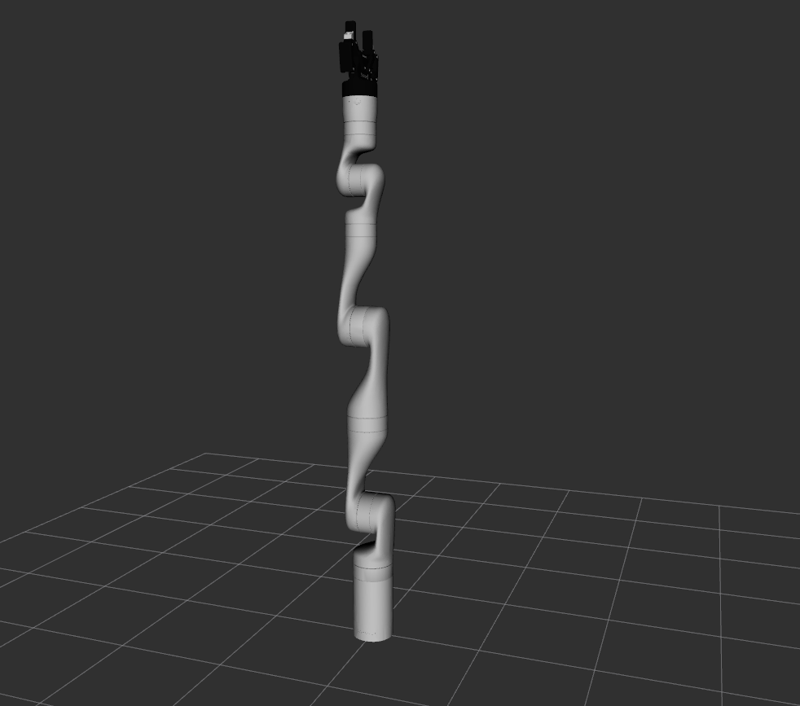

B0 · The Kinova workspace
Open up the workspace that holds the arm's software: what is in it, where it came from, how it was built, and how to change one of its packages without touching the original.
1. Goal
Since A0 the arm's launch files have simply worked. This lesson explains what is behind them, because from Part B on you will read the arm's files and sometimes change them. The workspace was built for you, by the Docker image or by the local install steps of A0. Here you only look at it, and then make one change of your own in an overlay (A5), which is the safe way to experiment.
At the end of this lesson you will have:
- found the Kinova workspace and the exact version of
ros2_kortexit was built from, - read the
.reposfiles that list the other source packages it needs, and counted all 76 packages by origin, - seen what the seven Kinova packages are for,
- read the three build steps (
vcs import,rosdep install,colcon build) and why each is needed, - copied one Kinova package into your own workspace, changed it, and seen RViz use your version.
2. Concepts
ros2_kortex
ros2_kortex is the repository (a folder of packages, kept in git) that Kinova publishes for ROS 2. The jazzy branch is the one for our ROS 2 version. It holds seven packages:
| Package | What it is |
|---|---|
kortex_description | The model of the arms and grippers: the URDF (xacro) files, the 3D meshes, the RViz setup, and view_robot.launch.py from A6. Part of B1. |
kortex_bringup | The launch files and controller settings that start the arm: gen3.launch.py (A7), kortex_sim_control.launch.py (Gazebo, Part C) and the controller YAML files. |
kortex_driver | The hardware plugin for ros2_control that talks to the real arm over the network. It is what use_fake_hardware:=true replaces (A7). |
kortex_api | Kinova's own C++ library (a pre-built archive), which the driver uses to talk to the arm. |
kinova_gen3_7dof_robotiq_2f_85_moveit_config, kinova_gen3_6dof_robotiq_2f_85_moveit_config, kinova_gen3_lite_moveit_config | The MoveIt 2 settings for three arm variants (B4). We use the 7-DoF one. |
Other source packages
The arm also needs ros2_control, its controllers, a Robotiq gripper driver, and the bridge between ROS 2 and Gazebo. Most of them exist as ready-made packages for Jazzy, but Kinova needs some that do not, or newer versions of them (a repository's own comments say "waiting for Jazzy sync"). So their source code is downloaded into the same workspace and compiled with it. Which repositories, and which branch of each, is written in small .repos files inside ros2_kortex: a list of git URLs and versions that the tool vcs reads.
Three steps to build it
vcs import: download every repository listed in the.reposfiles intosrc/.rosdep install: read thepackage.xmlof every package (A5) and install, withapt, the ready-made packages they depend on (Gazebo, MoveIt 2, ...).colcon build: compile all packages, in dependency order, intoinstall/(A5). With 76 packages this takes minutes, where your own packages took seconds.
The result is one workspace that you source after ROS 2 itself: an overlay (A5). Everything in this lesson follows from that.
3. Do it
All commands run in a container shellterminal set up for ROS 2 (A0, step 5), in the ros2-tutorial folder. Nothing needs the Python / C++ switch. The workspace is in /opt/kortex_ws in the container and in ~/kortex_ws in a local install; the first step puts its folder into a shell variable, KWS, so that every command is the same for both.
-
Find the workspace
host Open a terminal in the
ros2-tutorialfolder and enter a container:docker/run_ros2.shhost Open a terminal in the
ros2-tutorialfolder.container A package's install folder is two levels below its workspace, so
ros2 pkg prefix(A5) leads to it:KWS=$(realpath $(ros2 pkg prefix kortex_description)/../..) echo $KWS ls $KWS/opt/kortex_ws build install log src
These are the three folders every colcon workspace has (A5), plus
srcwith the downloaded repositories:ls $KWS/srccontrol_msgs control_toolbox generate_parameter_library gz_ros2_control picknik_controllers ros2_control ros2_control_cmake ros2_controllers ros2_kortex ros2_robotiq_gripper ros_gz serial
Twelve repositories:
ros2_kortexis the one from Kinova, and the other eleven are what it depends on. Ask git which version ofros2_kortexyou have. (The-c safe.directory=...part tells git that it is fine to read a folder owned by another user, as/opt/kortex_wsis in the container.)G="git -c safe.directory=$KWS/src/ros2_kortex -C $KWS/src/ros2_kortex" $G branch --show-current $G log -1 --format='%h %ad %s' --date=short $G remote get-url originjazzy 462dab9 2026-09-08 dependency repo branch update https://github.com/Kinovarobotics/ros2_kortex.git
The branch is
jazzy, and the last change in it is the commit462dab9(your commit may be newer if the image was built later). Whenever something differs between your machine and a colleague's, this is the first thing to compare. -
Read a
.reposfileros2_kortexcontains several of them, for different ROS versions. The Jazzy build uses three:ros2_kortex.jazzy.repos,ros2_kortex-not-released.jazzy.reposandsimulation.jazzy.repos. The second one is short:cat $KWS/src/ros2_kortex/ros2_kortex-not-released.jazzy.reposrepositories: picknik_controllers: type: git url: https://github.com/picknikrobotics/picknik_controllers.git version: main ros2_robotiq_gripper: type: git url: https://github.com/picknikrobotics/ros2_robotiq_gripper.git version: main serial: type: git url: https://github.com/tylerjw/serial.git version: ros2 gz_ros2_control: type: git url: https://github.com/ros-controls/gz_ros2_control.git version: jazzyIt is YAML (as in A4). Each entry is a folder name in
src/with theurlto clone and theversionto check out, a branch, a tag or a commit. "Not released" means that no ready-made Jazzy package of these exists, which is why they have to be compiled. The other two files listros2_controland its controllers (ros2_kortex.jazzy.repos) andros_gz(simulation.jazzy.repos). Some repositories are in more than one file;vcs import --skip-existingthen clones each only once. -
Count the packages
colcon list(A5) lists the packages under a folder. A repository can hold many packages, so count them per repository. Run it from/tmp, because colcon writes alogfolder where it runs and the workspace is read-only:cd /tmp colcon list --base-paths $KWS/src | wc -l colcon list --base-paths $KWS/src | awk '{print $2}' | sed "s|^$KWS/src/||" | cut -d/ -f1 | sort | uniq -c cd -76 1 control_msgs 1 control_toolbox 6 generate_parameter_library 3 gz_ros2_control 2 picknik_controllers 11 ros2_control 1 ros2_control_cmake 32 ros2_controllers 7 ros2_kortex 4 ros2_robotiq_gripper 7 ros_gz 1 serial /workspace76 packages in all, and only 7 of them are Kinova's. The rest is the machinery under them: ros2_control and 32 controllers (A7), the Robotiq gripper, and the Gazebo bridge. (
cd -takes you back to the folder you came from and prints it:/workspacein the container, yourros2-tutorialfolder in a local install.) Those 7 are the table in the concepts. Look at the description and the launch files of two of them:ls $KWS/src/ros2_kortex/kortex_description $KWS/src/ros2_kortex/kortex_description/arms $KWS/src/ros2_kortex/kortex_bringup/launch/opt/kortex_ws/src/ros2_kortex/kortex_bringup/launch: gen3.launch.py gen3_lite.launch.py kortex_control.launch.py kortex_sim_control.launch.py test_huge_joint_space_jump.launch.py test_joint_trajectory_controller.launch.py /opt/kortex_ws/src/ros2_kortex/kortex_description: CHANGELOG.rst CMakeLists.txt arms config grippers launch multiple_robots package.xml readme.md robots rviz /opt/kortex_ws/src/ros2_kortex/kortex_description/arms: gen3 gen3_lite
(
lssorts the three folders by name, so the launch folder comes first.) Inkortex_descriptionthere are folders forarms(gen3andgen3_lite),grippers,robots(the xacro that puts an arm and a gripper together),launch, andrviz.kortex_bringup/launchholds the launch files you have used:gen3.launch.pyand, for Gazebo in Part C,kortex_sim_control.launch.py. -
How it was built
The three steps are in the Dockerfile that built your image (the local install of A0 runs the same ones by hand). This is the part that matters (comments shortened):
ARG KORTEX_REF=jazzy ENV KORTEX_WS=/opt/kortex_ws WORKDIR $KORTEX_WS RUN git clone --branch "$KORTEX_REF" https://github.com/Kinovarobotics/ros2_kortex.git src/ros2_kortex \ && for f in ros2_kortex.jazzy.repos ros2_kortex-not-released.jazzy.repos simulation.jazzy.repos; do \ vcs import src --skip-existing --input "src/ros2_kortex/$f"; done # System dependencies (Gazebo Harmonic, MoveIt 2, ros2_control, ...) resolved from the package.xml files. RUN apt-get update && rosdep update --rosdistro jazzy \ && rosdep install --ignore-src --from-paths src -y -r \ && rm -rf /var/lib/apt/lists/* # Few parallel workers: the default can exhaust memory. RUN source /opt/ros/jazzy/setup.bash \ && colcon build --cmake-args -DCMAKE_BUILD_TYPE=Release --parallel-workers 6Read it from the top.
git clone --branch jazzygetsros2_kortex, and theforloop runsvcs importon the three.reposfiles.rosdep install --ignore-src --from-paths src -y -rreads everypackage.xmlinsrcand installs what is missing fromapt:--ignore-srcskips what is in the workspace itself,-yanswers yes, and-rcarries on if one package cannot be resolved. Last,colcon buildwith-DCMAKE_BUILD_TYPE=Release(compile with optimisation: robot code must be fast) and--parallel-workers 6, which builds at most 6 packages at a time. We did not run these steps in this lesson, since the workspace already exists: the full build takes about 3.5 minutes on a 32-core computer, and the image that results is 8.65 GB.Why only 6 workers Compiling C++ uses a lot of memory, and colcon by default starts as many jobs as your computer has cores. On a computer with many cores but not much RAM, that can run out of memory and the build crashes or the machine freezes. If a build of the workspace fails mysteriously, run it again with a smaller number, such as--parallel-workers 2. -
Change a package in your own overlay
You must not edit
/opt/kortex_ws: it is read-only in the container, and in a local install a change would be hard to undo. Use the idea of A5: put a copy of one package in a workspace of your own, build it there, and source it after the Kinova workspace. ROS 2 then finds your copy first. Copykortex_description(the model package) and build it with--symlink-install(A5):mkdir -p code/b0-kortex/ws/src cp -r $KWS/src/ros2_kortex/kortex_description code/b0-kortex/ws/src/ cd code/b0-kortex/ws colcon build --symlink-install source install/setup.bashStarting >>> kortex_description Finished <<< kortex_description [0.94s] Summary: 1 package finished [0.98s]
One package, about a second. This is why you never rebuild the whole workspace for a small change. Check which copy ROS 2 sees:
ros2 pkg prefix kortex_description echo $AMENT_PREFIX_PATH | tr : '\n' | head -3/workspace/code/b0-kortex/ws/install/kortex_description /workspace/code/b0-kortex/ws/install/kortex_description /opt/kortex_ws/install/kortex_bringup /opt/kortex_ws/install/kinova_gen3_lite_moveit_config
Before you sourced the overlay, the same command printed
/opt/kortex_ws/install/kortex_description. Now it prints your copy, and your copy is first in the search path. (The third line of the second command depends on the order in which packages were installed, and in a local install the paths start with your home folder.) Now a change you can see: the grid in RViz has squares of 1 m, and that is set in a file of this package,rviz/view_robot.rviz. Make them smaller, 0.25 m:grep -n "Cell Size" src/kortex_description/rviz/view_robot.rviz sed -i 's/Cell Size: 1$/Cell Size: 0.25/' src/kortex_description/rviz/view_robot.rviz grep -n "Cell Size" src/kortex_description/rviz/view_robot.rviz26: Cell Size: 1 26: Cell Size: 0.25
No rebuild is needed: with
--symlink-install, the installed file is a link to the one you just edited. Start the arm viewer of A6 and look at the grid (go back to theros2-tutorialfolder first):cd ../../.. ros2 launch kortex_description view_robot.launch.py gripper:=robotiq_2f_85
The arm, over a grid of 0.25 m squares (the squares were 1 m before the change). The title bar of the RViz window showed the file it loaded, .../b0-kortex/ws/install/kortex_description/share/kortex_description/rviz/view_robot.rviz: yours, not the original.Close the windows with Ctrl+C in the terminal. To get the original back, open a new terminal: it does not have your overlay sourced, so it sees
/opt/kortex_wsagain. The foldercode/b0-kortex/wsis ignored by git; delete it when you no longer need it. This is the way to try changes to any Kinova package in the course.
4. Check
You are done when:
echo $KWSprints your workspace folder andls $KWS/srclists twelve repositories, one of themros2_kortex,colcon listreports 76 packages, 7 of them fromros2_kortex,- in the shell where you sourced the overlay,
ros2 pkg prefix kortex_descriptionpoints intocode/b0-kortex/ws, and in a new terminal it points into the Kinova workspace, - RViz shows a finer grid after your edit.
5. Exercise
Which package holds the Gazebo launch file kortex_sim_control.launch.py, and in which repository? Find it with one command, without looking in the lesson.
Answer
find $KWS/src -name kortex_sim_control.launch.py/opt/kortex_ws/src/ros2_kortex/kortex_bringup/launch/kortex_sim_control.launch.py
It is in the package kortex_bringup (the folder after ros2_kortex/), in the repository ros2_kortex. The path tells you both: src/repository/package/.... (In a local install the path starts with ~/kortex_ws.)
6. Recap
- ros2_kortex (branch
jazzy) has 7 packages: the model (kortex_description), the launch files and controller settings (kortex_bringup), the hardware driver and its API (kortex_driver,kortex_api) and three MoveIt configurations. - It needs other source packages (ros2_control and controllers, a Robotiq driver, the Gazebo bridge), listed in
.reposfiles. In all, 76 packages in 12 repositories. - The build is
vcs import(download),rosdep install(system packages),colcon build(compile, a few minutes). Limit--parallel-workersif memory runs out. - Never edit the workspace itself. Copy a package into your own workspace, build it there (
--symlink-install), source it last: it overrides the original, and a new terminal gets the original back. git loginsrc/ros2_kortextells you which version you have.